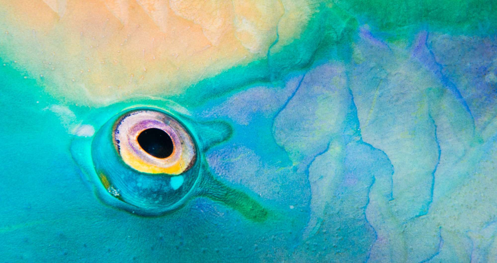

Wildlife Photographer of the Year 2016
Blog
What’s so remarkable about wildlife? This year’s Wildlife Photographer exhibition at the National History museum was a shining crystal drop in the ocean of answers. Walls of vibrant, luminous images projected their magically captured moments from every corner. At times it felt like looking through some other, non human vision: transient seconds captured in stills, oozing bright yellows, blues, golds and greens inviting to take a moment and submerge yourself within the pictured worlds.

Photograph: Ally McDowell/2016 Wildlife Photographer of the Year

Photograph: Ross Hoddinott/2016 Wildlife Photographer of the Year

Photograph: Tim Laman/2016 Wildlife Photographer of the Year